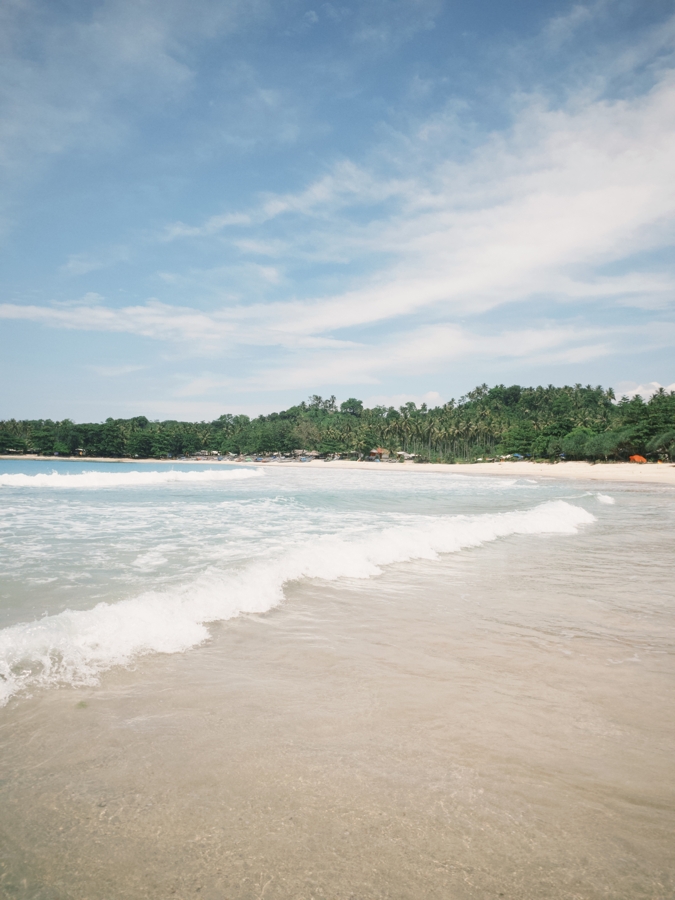

Pantai Legon Pari merupakan salah destinasi wisata di Sawarna yang masih jarang dikunjungi wisatawan karena lokasinya yang tersembunyi dan jarak tembuh dari jalan Desa cukup jauh, hanya bisa d[...]
Deburan ombak akan menyambut wisatawan ketika pertama kali sampai ke Pantai Legon Pari, hamparan pasir putih yang masih bersih akan memanjakan pengelihatan wisatawan. Saat cuaca sedang bagus, [...]